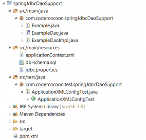

This example presents the basic concept of using in Spring JdbcDaoSupport.
The technologies used are :
- Spring 4.3.4
- Junit 4.12
- JDK 1.8
- Maven 3.3.9
You can convert this example to an eclipse project by going to folder where the pom.xml is, and use the following command :
mvn eclipse:eclipse
Here the project files :

Example Spring 4 – JdbcDaoSupport
package com.codercocoon.springJdbcDaoSupport;
import java.util.Date;
/**
* Example class : we suppose that an example has : id, title, description and a
* publication date.
*
* @author contact@codercocoon.com
*
*/
public class Example {
private int id;
private String title;
private String description;
private Date publicationDate;
public Example() {
}
public Example(String title, String description) {
this.title = title;
this.description = description;
}
public int getExampleId() {
return id;
}
public void setExampleId(int id) {
this.id = id;
}
public String getTitle() {
return title;
}
public void setTitle(String title) {
this.title = title;
}
public String getDescription() {
return description;
}
public void setDescription(String description) {
this.description = description;
}
public Date getPublicationDate() {
return publicationDate;
}
public void setPublicationDate(Date publicationDate) {
this.publicationDate = publicationDate;
}
public String toString() {
return id + " - " + title + " - " + description;
}
}
package com.codercocoon.springJdbcDaoSupport;
import java.util.List;
/**
* The DAO Interface.
*
* @author contact@codercocoon.com
*
*/
public interface ExampleDao {
/**
* Gets all examples in the database.
*
* @return a list of examples.
*/
List<Example> getAllExamples();
/**
* Gets an example by its title.
*
* @param title
* : is unique constraint.
* @return the example having the title parameter.
*/
Example getExampleByTitle(String title);
/**
* Saves the example passed in the parameter.
*
* @param ex
*/
void saveExample(Example ex);
/**
* Updates the example passed in the parameter.
*
* @param ex
*/
void updateExample(Example ex);
/**
* Deletes the example which has the ID passed in the parameter.
*
* @param id_ex
*/
void deleteExample(int id_ex);
}
package com.codercocoon.springJdbcDaoSupport;
import java.util.List;
import org.springframework.dao.EmptyResultDataAccessException;
import org.springframework.jdbc.core.BeanPropertyRowMapper;
import org.springframework.jdbc.core.support.JdbcDaoSupport;
/**
* The DAO implementation.
*
* @author contact@codercocoon.com
*
*/
public class ExampleDaoImpl extends JdbcDaoSupport implements ExampleDao {
/**
* This method selects all examples from the database.
*/
@Override
public List<Example> getAllExamples() {
String sql = "SELECT * FROM EXAMPLE";
List<Example> examples = getJdbcTemplate().queryForList(sql, null,
new BeanPropertyRowMapper<Example>(Example.class));
return examples;
}
/**
* This method gets an example from the database by its title.
* BeanPropertyRowMapper is just magic stuff that he maps fields from the
* database table to the target object.
*/
@Override
public Example getExampleByTitle(String title) {
String sql = "SELECT * FROM EXAMPLE WHERE TITLE = ?";
Object[] params = new Object[] { title };
Example ex = null;
try {
ex = (Example) getJdbcTemplate().queryForObject(sql, params,
new BeanPropertyRowMapper<Example>(Example.class));
} /*
* If no rows found, Spring throws an exception, so we catch the
* exception to return null.
*/
catch (EmptyResultDataAccessException e) {
return ex;
}
return ex;
}
/**
* This method inserts an example in the database.
*/
@Override
public void saveExample(Example ex) {
String sql = "INSERT INTO EXAMPLE (TITLE, DESCRIPTION) VALUES (?, ?)";
getJdbcTemplate().update(sql, new Object[] { ex.getTitle(), ex.getDescription() });
}
/**
* This method updates an example in the database by its ID.
*/
@Override
public void updateExample(Example ex) {
String sql = "UPDATE EXAMPLE SET TITLE = ?, DESCRIPTION = ? WHERE EXAMPLE_ID = ?";
getJdbcTemplate().update(sql, new Object[] { ex.getTitle(), ex.getDescription(), ex.getExampleId() });
}
/**
* This method deletes an example from the database by its ID.
*/
@Override
public void deleteExample(int id_ex) {
String sql = "DELETE FROM EXAMPLE WHERE EXAMPLE_ID = ?";
getJdbcTemplate().update(sql, new Object[] { id_ex });
}
}
<?xml version="1.0" encoding="UTF-8"?>
<beans xmlns="http://www.springframework.org/schema/beans"
xmlns:context="http://www.springframework.org/schema/context"
xmlns:xsi="http://www.w3.org/2001/XMLSchema-instance" xmlns:c="http://www.springframework.org/schema/c"
xmlns:jdbc="http://www.springframework.org/schema/jdbc"
xsi:schemaLocation="http://www.springframework.org/schema/beans http://www.springframework.org/schema/beans/spring-beans-4.3.xsd
http://www.springframework.org/schema/context http://www.springframework.org/schema/context/spring-context-4.3.xsd http://www.springframework.org/schema/jdbc http://www.springframework.org/schema/jdbc/spring-jdbc-4.3.xsd">
<!-- Properties of the JDBC connection. -->
<context:property-placeholder location="jdbc.properties" />
<!-- the dataSource bean is setted to JdbcDaoSupport object automatically. -->
<bean id="dataSource"
class="org.springframework.jdbc.datasource.DriverManagerDataSource">
<property name="driverClassName" value="${jdbc.driverClassName}" />
<property name="url" value="${jdbc.url}" />
<property name="username" value="${jdbc.username}" />
<property name="password" value="${jdbc.password}" />
</bean>
<!-- Initializing the database -->
<jdbc:initialize-database data-source="dataSource">
<jdbc:script location="classpath:db-schema.sql" />
</jdbc:initialize-database>
<bean id="example" class="com.codercocoon.springJdbcDaoSupport.Example"
c:_0="example title" c:_1="This the example description" />
<bean id="exampleDao" class="com.codercocoon.springJdbcDaoSupport.ExampleDaoImpl">
<property name="dataSource" ref="dataSource" />
</bean>
</beans>
--Drop the database : `example_jdbc`
DROP DATABASE IF EXISTS `example_jdbc`;
--Create the database : `example_jdbc`
CREATE DATABASE IF NOT EXISTS `example_jdbc` DEFAULT CHARACTER SET latin1 COLLATE latin1_swedish_ci;
USE `example_jdbc`;
--Create the Example table.
CREATE TABLE IF NOT EXISTS `example` (
`example_id` int(6) NOT NULL AUTO_INCREMENT,
`title` varchar(60) NOT NULL,
`description` varchar(250) NOT NULL,
PRIMARY KEY (`example_id`),
UNIQUE KEY `title` (`title`)
) ENGINE=InnoDB DEFAULT CHARSET=latin1;
--Insert some examples in the database.
INSERT INTO `example` (`title`, `description`) VALUES ('example title 1', 'example description 1');
INSERT INTO `example` (`title`, `description`) VALUES ('example title 2', 'example description 2');
INSERT INTO `example` (`title`, `description`) VALUES ('example title 3', 'example description 3');
INSERT INTO `example` (`title`, `description`) VALUES ('example title 4', 'example description 4');
jdbc.driverClassName=com.mysql.jdbc.Driver jdbc.url=jdbc:mysql://localhost:3306/example_jdbc #Don't forget to configure your login and password to connect to your MySQL server. jdbc.username=root jdbc.password=
package com.codercocoon.test.springJdbcDaoSupport;
import java.util.Date;
import org.junit.Assert;
import org.junit.Test;
import org.junit.runner.RunWith;
import org.springframework.beans.factory.annotation.Autowired;
import org.springframework.test.context.ContextConfiguration;
import org.springframework.test.context.junit4.SpringJUnit4ClassRunner;
import com.codercocoon.springJdbcDaoSupport.Example;
import com.codercocoon.springJdbcDaoSupport.ExampleDao;
/**
* Test class instead XML-based config.
*
* @author contact@codercocoon.com
*
*/
@RunWith(SpringJUnit4ClassRunner.class)
@ContextConfiguration("classpath:applicationContext.xml")
public class ApplicationXMLConfigTest {
@Autowired
ExampleDao exampleDao;
@Autowired
Example example;
final String TITLE = "example title";
/**
* This test checks if the example is well inserted.
*/
@Test
public void testInsertExample() {
exampleDao.saveExample(example);
Assert.assertTrue(example.getTitle().equals(exampleDao.getExampleByTitle(TITLE).getTitle()));
}
/**
* This test checks if the example is well updated, the modification of
* title which is unique, we concatenate it with the date with seconds, to
* allow running the test many times.
*/
@Test
public void testUpdateExample() {
Example ex = getExample(TITLE);
ex.setTitle("title modified ".concat(new Date().toString()));
exampleDao.updateExample(ex);
ex = exampleDao.getExampleByTitle(TITLE);
Assert.assertNull(ex);
}
/**
* This test checks if the example is well deleted.
*/
@Test
public void testDeleteExample() {
Example ex = getExample(TITLE);
exampleDao.deleteExample(ex.getExampleId());
ex = exampleDao.getExampleByTitle(TITLE);
Assert.assertNull(ex);
}
/**
* This method insert the example if not exist in the database, the object
* inserted is the bean "example" which is autowired.
*/
private Example getExample(String title) {
Example ex = exampleDao.getExampleByTitle(title);
if (ex == null) {
exampleDao.saveExample(example);
ex = exampleDao.getExampleByTitle(title);
}
return ex;
}
}
Get the sources of the example from the following GitHub url
Be the first to comment on "Example Spring 4 – JdbcDaoSupport"